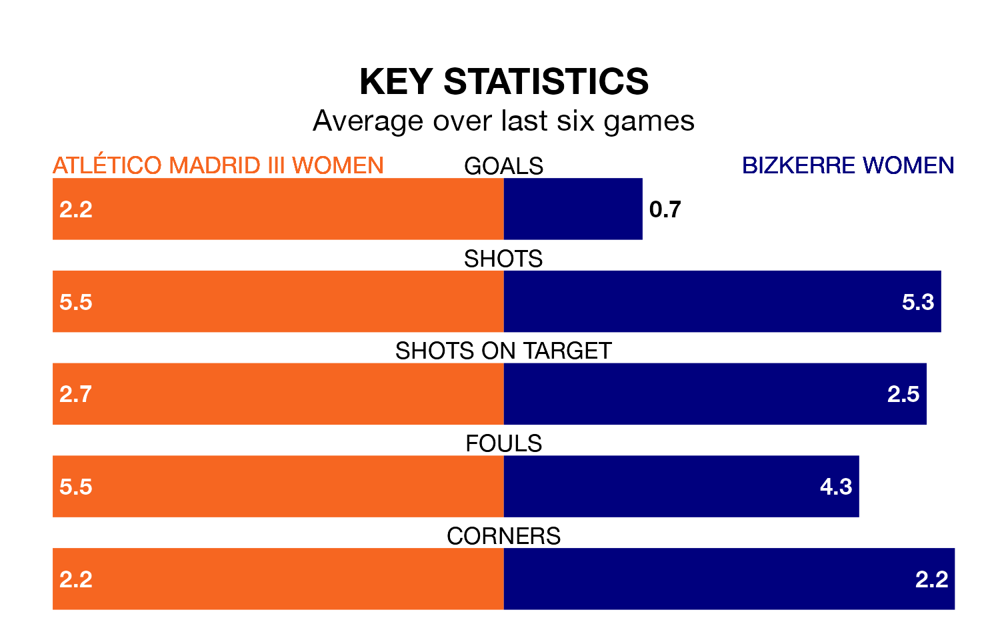

Atlético Madrid III Women host Bizkerre Women in Saturday lunchtime's match looking to bounce back from defeat last time out in Segunda Federación Femenina.
Atlético Madrid III, who sit 15th in the league after 17 games, fell to a 1-2 home defeat to Sporting Gijón Women on January 21.
They face a Bizkerre side who secured a draw in their last match, a 1-1 tie with Osasuna II Women, and who sit zero in the table.
Atlético Madrid III are in reasonable form in Segunda Federación Femenina, with three wins and two draws from their last six games.
With no wins and a draw over that period, Bizkerre's form is much worse – they have taken one point from 18, compared to the hosts' 11.
With 12 goals in 17 games so far this season, the away side are the league's-14th-lowest scorers with 0.7 goals per game. And they are conceding more than average, letting in 23 goals at a rate of 1.4 per game.
Atlético Madrid III are also below average scorers, with 1.2 goals per game, compared to a league average of 1.3. They have also conceded 1.2 goals per game.
Updated: 08:51 (UTC), 25/01/24